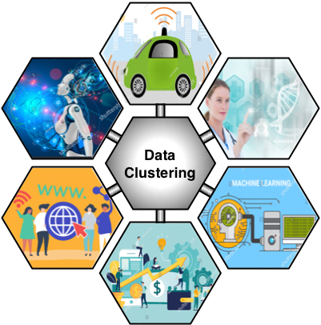

Large Scale Data Clustering
|
Data clustering that refers to partitioning a set of objects into meaningful groups with no predefined labels is one of the most fundamental components in learning and understanding the natural structure of data sets. Clustering techniques are increasingly used by various fields of science and engineering for important applications such as precision medicine, world wide web, machine learning, self-driving cars, business marketing, and economy. Due to recent advances in sensor and storage technologies data clustering has become one of the most critical tools for future computer systems. k-means is one of the most commonly used algorithms for solving data clustering problems in science and engineering. For instance, iterative k-means clustering is used to identify cancerous samples, to perform unsupervised learning tasks, or to classify non-numerical data sets such as text documents. Due to excessive memory accesses induced by the iterative nature of these applications, processing big data requires significant energy and execution time. Numerous techniques have been proposed in the literature to address this problem, such as parallel probabilistic platforms, GPU based accelerators, application specific hardware frameworks, and FPGA based accelerators. Regrettably, the required data movement between main memory and the processor cores limits the performance of these recent efforts even for moderately sized data sets. Moreover, with the growing interest in the future data intensive applications---such as deep learning applications that rely on unsupervised classification---the importance of high performance k clustering methods is expected to increase. |
 |
Memristive Data Clustering
This project proposes a novel mechanism for computing bit serial medians within resistive RAM (RRAM) arrays with no need to read out the operands from memory cells. We propose a novel 4-transistor, 4-memristor (4T-4R) memory cell that enables in-situ median computation within the data arrays. (If necessary, the proposed cell could be used as four ordinary 1T-1R memory cells to store four bits of information.) The proposed hardware is used to accelerate a data clustering library using breast cancer samples, indoor localization, and the US census datasets, as well as two applications employing k-means clustering. Our simulation results indicate orders of magnitude performance and energy-efficiency gains for various applications of k-medians clustering.
Youtube Videos
- An overview of the proposed accelerator is available here.
Publications
- Accelerating k-Medians Clustering using a Novel 4T-4R RRAM Cell, Yomi Karthik Rupesh, Payman Behnam, Goverdhan Reddy Pandla, Manikanth Miryala, and Mahdi Nazm Bojnordi, IEEE Transactions on Very Large Scale Integration Systems (TVLSI), 2018.
- Large Scale Data Clustering Using Memristive k-Median Computation, Yomi Karthik Rupesh, Mahdi Nazm Bojnordi, International Conference on Parallel Architectures and Compilation Techniques (PACT), ACM SRC Presentations, 2017.